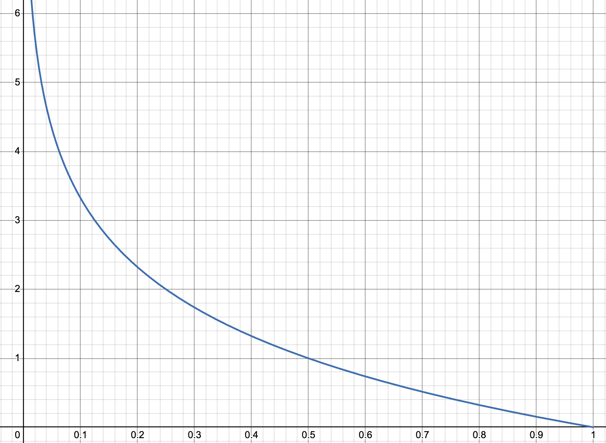
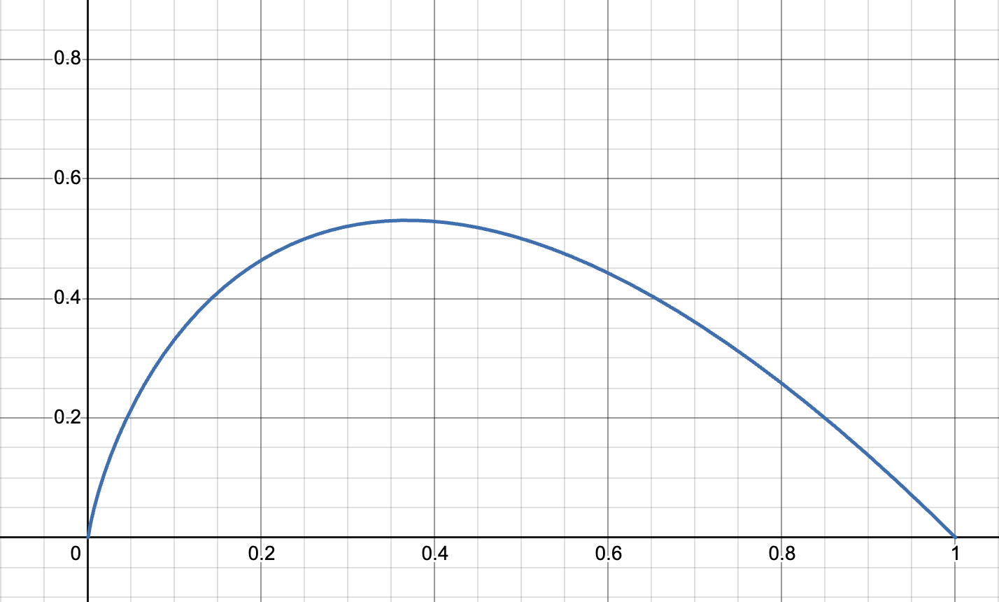

It's been described to me as, "information resolves uncertainty." I think the best way to get a sense for it is talking about surprisal with regards to a specific thing.
Scenario 1.1
You come to a fork in the road and you have no ideas about which way might be the correct way to go. We can represent them as paths $A$ and $B$. A natural way to represent this is with binary labels, hence it would be instead path $0$ for $A$ and path $1$ for $B$. Intuitively, if someone perfectly trustworthy tells you which way to go, they would be be giving you 1 bit (binary digit) of information: they're giving you a 0 or 1 to distinguish the options in the binary choice.
Scenario 1.2
What if you do have some information preceding this, though? What if you have 70% confidence that path $A$ is correct, since someone earlier on the road who seemed somewhat trustworthy told you it was? They wouldn't be giving you still 1 bit of information, because you'd be updating less — you're less surprised. You already thought this was the case, they're just upgrading your confidence. No longer can we work with simple integers of bits; we realize from this that the amount of information you get is directly related to how much knowledge you already have — or don't have.
The intuition here is that the amount of information you're getting is related to how surprised you are to receive it.
In a formal sense, surprisal quantifies how wrong your predictions were. (At least, this is one way to think about it — a starter intuition, if you will.) When an event you didn't expect occurs — i.e. it surprises you — that surprise tells you that your model of the world was wrong or incomplete, insofar as you didn't predict the event with 99.99% confidence. Hence, you most likely have to update your internal model of the world such that it would predict that outcome with higher confidence. Surprise tells you that you're receiving information about the world, about how your model was wrong.
If you have a perfect internal world model — i.e. you're literally omniscient and you can simulate every single possible causal relation in the universe at once — your model will never update, and you'll never be surprised; you know all the information! Conversely, if your model of the world is consistently horrible, you'll be constantly updating your model after your predictions are falsified, constantly surprised at the world. You know very little of the information.
I'll talk about how to measure error and surprise soon, but for now I want to finish formalizing information — I'll derive intuitively the way you actually calculate the information you receive from an event's occurrence.
I'll start with two ways that you might naturally think about information as a mathematical object, and why those ways lead you to computational problems.
Scenario 2.1
From the 70%/30% situation above, you might think that the person on the path would be giving you 0.3 bits of information, thus making up for the difference in the outcomes. (This would be incorrectly applying intuitions that "probabilities should sum to 1.") If you think about this more deeply, though, the math doesn't work out; distinguishing between two perfectly uncertain options — events that have priors of 0.5 each — would only give you 0.5 bits of information, as opposed to the 1 bit we would expect. Shouldn't someone revealing to you a bit — a zero or a one, a binary choice — give you one bit of information, if you have literally no idea what that bit might be?
Scenario 2.2
Here's another way that "adding to 1" doesn't work out nicely: if you have two fair coins and you flip them both separately, each coin flip would theoretically give you 0.5 bits of information. However, if you looked at it from the perspective of their joint probability distribution — for example, $P(\text{2 heads}) = 0.5 * 0.5 = 0.25$ — we would get 0.75 bits of information instead. This just straightforwardly doesn't work out. Two independent events should not give different amounts information just based on whether you look at their probabilities together or separately — but we just saw that happen! We have to keep looking.
Okay, so information for an event $x$ can't just be $1-P(x)$. What else could it be?
If we think about it, the information we get is quantifying how wrong we are. If event $x$ happens and we predicted it with very high confidence, the amount of information should be really low — we expected it, and aren't very surprised. But conversely, if we predicted $x$ with really low confidence, the amount of information should be very large — and it should scale with orders of magnitude. If our $P(x) = 10\%$ and $x$ occurs, this should be very very different from if our $P(x) = 0.1\%$ — orders of magnitude different. So maybe we could say information is proportional to $1/P(x)$?
That's almost right, but we're still missing something.
Scenario 3.1
To see what's wrong let's imagine two fair dice. The probability of rolling a one on die $A$ is $1/6$; for $B$ it's also $1/6$. If we use $1/P(x)$, and look at the dice independently, seeing snake eyes — two ones — (or any other outcome for that matter) would give us $6 + 6 = 12$ bits. But if we once again consider the joint probability distribution, and ask what the probability of rolling snake eyes is, that probability is $1/6 \cdot 1/6 = 1/32$ — so if we once again rolled snake eyes, we'd get 32 bits of information instead of 12!
What's going on here? We once again just combined two independent events together into one observation without changing their independence, without changing the probability — and the amount information changed. The problem is that we want information to change additively, not multiplicatively; when you "get more information" from an event your knowledge doesn't double, but increases linearly — at the same times as probability, the quantity we want to base our observations on, scales multiplicatively.
To go back to the dice scenario: when we look at the joint distribution of the two dice, or three dice, or $n$ dice, the probability of one specific combination of those dice will be $1/6^n$. But we want the information to increase linearly as the probability decreases multiplicatively. If we wanted to linearize our probability graph, what would we do?
Take the $\log$ of it!
Since we're working in binary already (with bits of information), we can use the $\log_2$ scale — our probability will be $P(x)$ and our information will be $\log_2(1/P(x))$. Ta-da! Here's our information equation: $$I[x] = \log_2(\frac{1}{P(x)}) = -\log_2(P(x))$$ (Sometimes it's nicer to use a negative sign instead of an inverse, but they're equivalent.)
To sum it up, we use $1/P(x)$ because we want information to be inversely proportional to probability — the occurrence of a (in our minds) low-probability event should give us lots of information, and the reverse for high-probability events. Then we add the $\log$ so that information will add when we look at multiple events together, instead of multiplying — it'll accumulate nicely over time instead of exponentiating rapidly.
This equation gives us nice properties:
 Fig 1: The graph of $y = \log_2(x)$, where $y$ is the "information content" or the surprisal produced by the occurrence of an event whose probability in your mind is $x$.
So there's the idea about why the information content of an event uses a log scale. To sum it up, $\text{Information} = -\log_2P(x)$ where $x$ is an outcome and $P(x)$ is the probability of that outcome. (Sorry to mix notations with $x$ being probability and $x$ being an outcome — hopefully that's not too annoying.)
We might want to look at information on the level of a probability distribution. We've talked about the information content of specific events, but how do we talk about our beliefs about an event — our internal distributions?
One thing we can talk about is entropy. Entropy in information theory describes something like, "How predictable is this distribution? How surprised will I be on average by an outcome?" In general, entropy measures the predictability of a distribution. (This is not a notion limited to information theory. For example, in statistical mechanics, the entropy of a particular macrostate/thermodynamic state is the number of possible microstates that could produce that macrostate — in other words, the unpredictability of the precise arrangements of atoms for a given macrostate; the unpredictability of the particular positions of atoms, summed over the distribution of all of them.)
Intuitively, to talk about how much we expect to be surprised given a distribution of the probabilities of possible outcomes of an event, we can do a simple expected value calculation: take the sum of the information content of each possible outcome, weighted by the probability of the outcome.
Hence, we can describe "expected surprise", AKA Shannon entropy ($H$1, for a probability distribution $X$ using the following formula: $$ H(X) =\sum_{\text{all outcomes in x}} \text{P(outcome)} \cdot \text{Info if outcome occurs}$$
Written in variables: $$H(X) =\sum_{x \in X} P(x) \space \log_2 \frac{1}{P(x)}$$ or $$ H(X) =-\sum_{x \in X} P(x) \space \log_2P(x) $$ where $X$ is a distribution of individual events $x$ and $P(x)$ is the probability you assign to the event. Hence, this sum represents going across each possible event in the distribution and computing the value $P(x) * \log_2(1/P(x)$ — corresponding to the info given by an outcome, weighted by how likely it is — then summing that up for each distribution.
 Fig 2: The graph of $-x * \log_2(x)$, which you can call the "expected surprisal" — the probability of the outcome occurring times the surprise that you would receive if it did occur. Notice how the graph is skewed right, but low-probability events, even though they have high surprisal, will have low expected surprisal because they're so unlikely.
Higher entropy to me intuitively means less predictability. For example, for the distribution $$X: \{x_1 = 0.9, x_2 = 0.05, x_3 = 0.05\}$$ the entropy is $$-[(0.9 * \log_2(0.9)) + 2 * (0.05 * \log_2(0.05)] \approx 0.473$$ — whereas for the less-predictable distribution $$X: \{x_1 = 0.33, x_2 = 0.33, x_3 = 0.34\}$$ the entropy is $$-(2 * (0.33 * \log_2(0.33)) + (0.34 * \log_2(0.34)) \approx 1.585.$$
Okay, we know how to measure the "disorder" or "unpredictability" of a distribution using its entropy. If we wanted, we could compare two distributions just using their entropy — but that wouldn't tell us how similar they were to one another. They could be entirely different, with entirely different events which had entirely different probabilities, and still have the same entropy. Our comparison would only give us a measure of how relatively disordered or unpredictable one distribution is to another.
We want a way to look at two distributions and see how different they are. For example, maybe you have reliable information about the true probability distribution for some set of events, and you want to measure how different your internal predictions were from that true distribution — say, to compare your accuracy to that of your friend's models. (I mean, you usually can't access your internal probabilities for things, so let's pretend you both actually made statistical models of the thing.)
One way to do this is Kullback–Leibler divergence, but people seem to have a hard time pronouncing this (?) so instead they just call it "KL Divergence." This comes up all the time in other fields, for example machine learning — it turns out that it's really useful to be able to compare two distributions!
The intuition for how you calculate KL divergence builds on the concept of surprise and information we built up earlier.
Let's say you want to play a coin toss game — if it's heads you win, if it's tails you lose. Your friend Anansi conveniently has a coin on hand, and offers it to you for the game. Unbeknownst to you, Anansi's coin is unfairly weighted — it's tails 70% of the time and heads only 30% of the time.
Hence, you have the following distributions:
$P$ is the true probability distribution of outcomes given by the weighting of Anansi's coin.
| Outcome | Heads | Tails |
|---|---|---|
| Probability | 0.3 | 0.7 |
$Q$ is your model of the distribution of outcomes for that coin toss. (You assume it's a fair coin by default.)
| Outcome | Heads | Tails |
|---|---|---|
| Probability | 0.5 | 0.5 |
How do we measure the difference between these two simple distributions?
One way to do this would be to measure the expected additional surprise that we'd receive from playing this game thinking that the outcomes were governed by distribution $Q$ when actually they were governed by $P$. To put it another way, we'd be measuring the additional surprise we get if we think $Q$ instead of $P$ is true.
If you're using model $Q$ when the true probability distribution is $P$, the expected additional surprise for that single event will intuitively be
Formally, you write this as $$P(x)\cdot(\ln(\frac{1}{Q(x)})-\ln(\frac{1}{P(x)}))$$ and if you want to look at this across the whole distribution (each event $x$ in the set of events $X$), you just use the summation
$$\sum_{x \in X}P(x)\cdot(\ln(\frac{1}{Q(x)})-\ln(\frac{1}{P(x)}))$$ giving you the formula for KL Divergence!
(Also, if you're confused by the use of $\ln$ instead of $\log_2$, see footnote 2. TL;DR the different logarithms don't matter much, you just kinda use whatever's convenient, so I'm switching to $\ln$ here because it's conventional for calculating KL divergence and is hence convenient.)
You might notice that this looks a lot like the entropy formula, which if you recall (now with $\ln$ instead of $log_2$) is $$H(X) =\sum_{x \in X} P(x) \space \ln \frac{1}{P(x)}$$. This similarity should make sense! Remember that entropy measures expected surprise; KL divergence measures expected additional surprise. In fact, another name for KL divergence or expected additional surprise is relative entropy! The only difference is that you're now measuring the divergence of one distribution from another, instead of just the expectations you have about a single distribution in isolation.
Great. Now we can use this to calculate the divergence of our predictions from the true probabilities of heads/tails from Anansi's coin — but first, let's adjust some things in this formula real quick, so that this definition looks like the more standard one on Wikipedia. First, we need to give it a formal function name. Standard is $D_{KL}(P \space ||\space Q)$ ("the KL divergence of P from Q"): $$D_{KL}(P \space ||\space Q) = \sum_{x \in X}P(x)\cdot(\ln(\frac{1}{Q(x)})-\ln(\frac{1}{P(x)}))$$
Then we do a bit of logarithm algebra, turning the log subtraction into division inside one logarithm:
$$D_{KL}(P \space ||\space Q) = \sum_{x \in X}P(x)\cdot\ln(\frac{\frac{1}{Q(x)}}{\frac{1}{P(x)}})$$ And then we just simplify the fraction using the reciprocals to get our final equation: $$D_{KL}(P \space ||\space Q) = \sum_{x \in X}P(x)\cdot\ln(\frac{P(x)}{Q(x)})$$ To reaffirm this intuitive derivation, let's get back to playing games with Anansi. Our expected additional surprisal for a single game would be $$\textbf{(1)} \: \: P(\text{Heads})\cdot [\ln\frac{1}{Q(\text{Heads})}-\ln\frac{1}{P(\text{Heads})}]$$$$+ \space \space \space P(\text{Tails})\cdot[\ln\frac{1}{Q(\text{Tails})}-\ln\frac{1}{P(\text{Tails})}]$$
Which we can simplify as follows:
$$\textbf{(2)} \: \: P(\text{Heads}) \cdot \ln(\frac{1/Q(\text{Heads})}{1/P(\text{Heads})}) + P(\text{Tails}) \cdot \ln(\frac{1/Q(\text{Tails})}{1/P(\text{Tails})}) $$ $$\textbf{(3)} \: \:P(\text{Heads}) \cdot \ln\frac{Q(\text{Heads})}{P(\text{Heads})} + P(\text{Tails}) \cdot \ln\frac{Q(\text{Tails})}{P(\text{Tails})} $$
Now, we can write it all in decimal form, substituting according to our two-way table
| Heads | Tails | |
|---|---|---|
| P(x) | 0.3 | 0.7 |
| Q(x) | 0.5 | 0.5 |
$$0.3 \cdot \ln(0.5/0.3)+0.7 \cdot\ln(0.5/0.7) \approx 0.08228 $$ To confirm this, we can write a little python script (credit to Zach Bobbitt on Statology):
from scipy.special import rel_entr
P = [0.3, 0.7]
Q = [0.5, 0.5]
print(sum(rel_entr(P, Q)))
Which nicely yields 0.08228287850505178. :D
As a fun little note, the letter $H$ is standard notation after it was used by Shannon. Apparently it was originally supposed to be the greek letter Eta — which looks exactly the same as H, such that LaTeX doesn't even have a separate symbol for it, you're just supposed to use $H$ — which is apparently what Boltzmann used originally used originally for thermodynamic entropy, since the letter E was already taken for other things. ↩
I told you earlier we would be working in $\log_2$ because it made sense in context. However, turns out that the units don't matter much for your calculation, and there's no "standard" unit of information. However, from what I've seen, most KL divergence calculators use $\ln$ instead of $\log_2$ or $\log$, since in various other places in statistics the $\ln$ function is more common, and therefore using "nats" of information (the unit when we calculate using log base $e$ as opposed to log base 2) allows for easier simplification of calculations. Hence, for now, I'm going to switch to using nats and $\ln$ instead of bits and $\log_2$. ↩